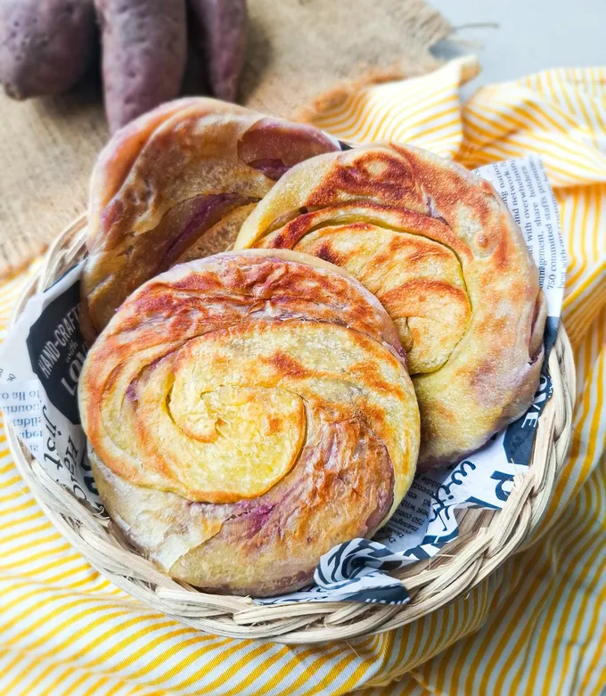

KUE MARYAM UBI UNGU
Bahan-Bahan
- 130 gram tepung terigu protein sedang
- 1 butir telur ukuran kecil
- 2 sdm minyak goreng Rose Brand
- 50 ml air
- Sejumput garam
- 1 sdm susu bubuk full cream
- 3 sdm ubi ungu kukus untuk layer
- 3 sdm butter margarin untuk olesan layer
- 100 ml minyak goreng Rose Brand untuk rendaman adonan

Langkah-Langkah
1. Pertama-tama siapkan semua bahan yang diperlukan. Campurkan tepung terigu dengan minyak goreng Rose Brand, susu bubuk, dan garam. Aduk rata.

2.Campurkan air dan telur ke dalam adonan, uleni sampai adonan bisa dibulatkan.

3. Bagi adonan menjadi 3 bagian sama besar, rendam selama minimal 30 menit di dalam minyak goreng Rose Brand.
4. Setelah direndam di dalam minyak goreng, ambil adonan, pipihkan sampai tipis, olesi butter margarin, disusul dengan layer tipis ubi ungu. Gurat-gurat permukaannya jangan sampai sobek.
5. Pilin perlahan seperti pada gambar, kemudian gulung adonan menyamping masing-masing 1/2 bagian ke kanan dan 1/2 bagian ke kiri, lalu lipat kedua ujung gulungan hingga kedua sisi gulungan bertemu.
6. Panaskan teflon dan beri sedikit minyak goreng kembali, letakkan adonan roti maryam sambil terus dipipihkan. Setelah satu sisi matang, balik roti untuk mematangkan sisi atasnya. Pada bagian ini roti tidak terlalu crispy permukaannya dan dapat disimpan sebagai stok frozen. Jika ingin langsung disajikan, proses memanggang bisa dilanjutkan sampai permukaan crispy sesuai dengan selera.
7.Roti maryam siap disajikan